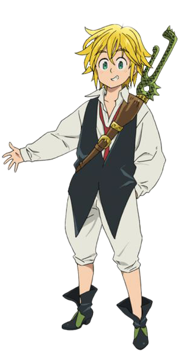

Uma aventura em busca de conhecimento
Olá, sou Fábio Nogueira Asseiro, um estudante de 19 anos de Análise e Desenvolvimento de Sistemas na Universidade São Judas, apaixonado por tecnologia. Estou em busca de oportunidades no mundo tech para crescimento e colaborações. Minha dedicação, entusiasmo e sede de conhecimento são meus maiores trunfos para contribuir em projetos e equipes inovadoras.
 Currículo
Currículo